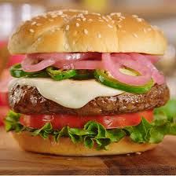
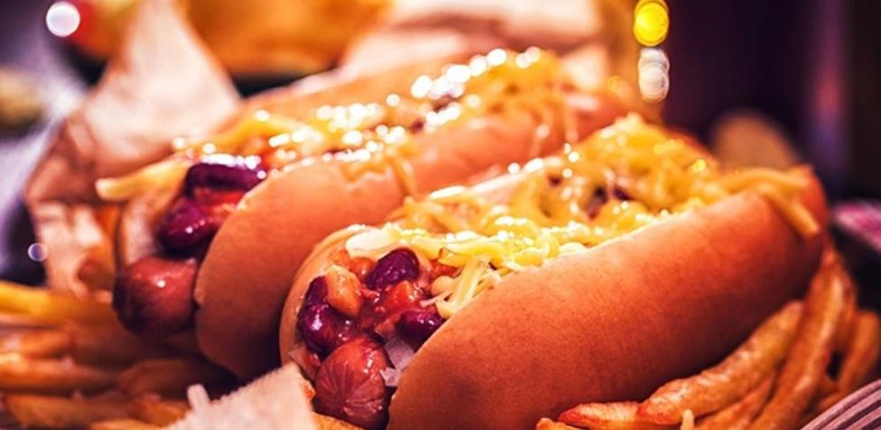
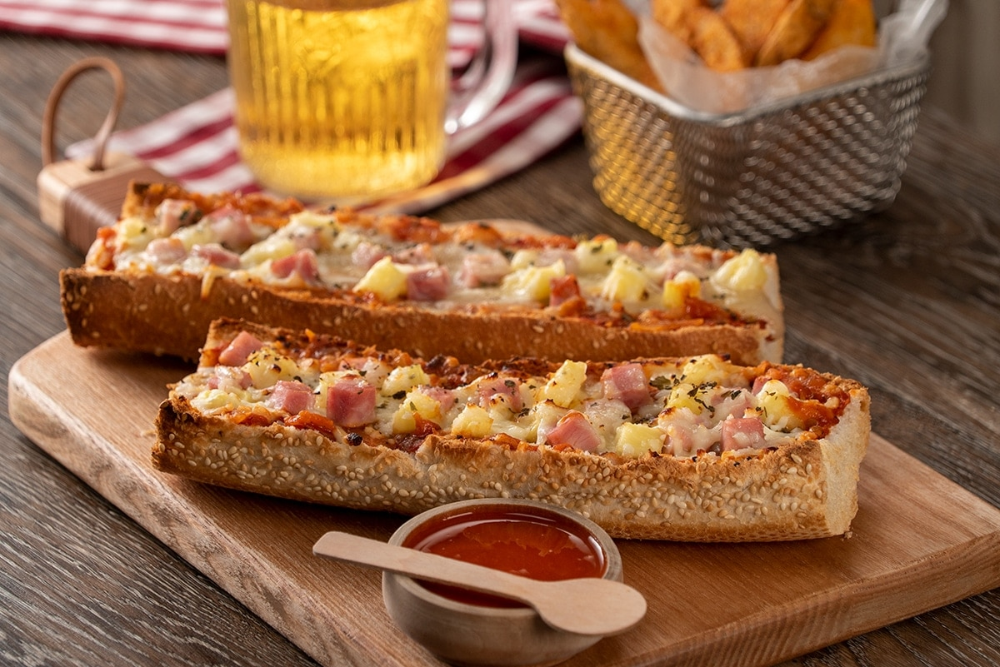

BIENVENIDOS
Bienvenidos a la pagina eficaz donde los pedidos y la comida se piden de un metodo virtual al cliente para ofrecerle eficiencia y seguridad.
Menus del dia y sus promociones
Menu #2
Menu #3
Food Cyber ofrece tambien una variente de alimentos que pueden ser desde una deliciosa pizza a un esquisito Baguette el cual lo puede elegir sin mayor retraso.

Pizza

Hamburguesa

Hot dog
